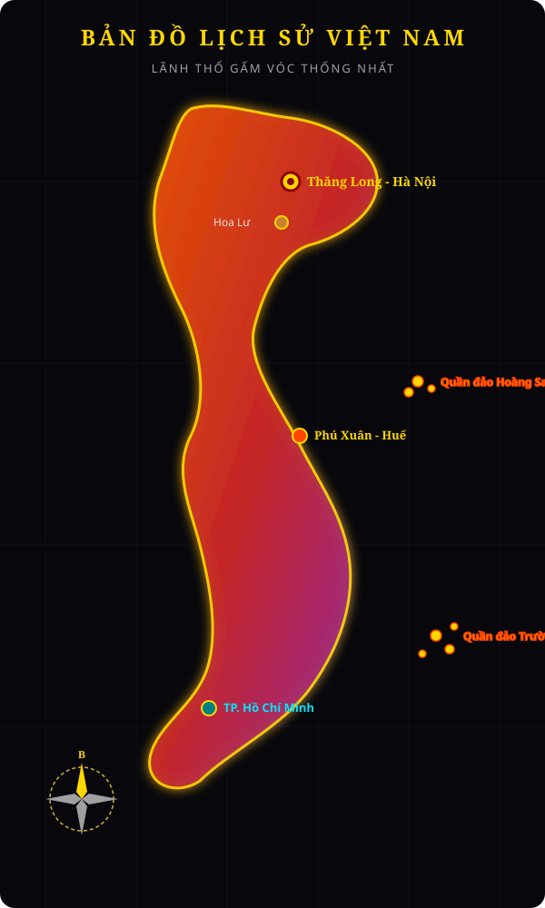

BẢO TÀNG SỐ ĐIỆN ẢNH VIỆT NAM
LỊCH SỬ VIỆT NAM QUA CÁC THỜI KỲ
Hành trình điện ảnh 4000 năm dựng nước, giữ nước và phát triển văn hiến rực rỡ của dân tộc Việt Nam.
LĂN CHUỘT XUỐNG ĐỂ KHÁM PHÁ
LÃNH THỔ GẤM VÓC
BẢN ĐỒ LỊCH SỬ VIỆT NAM
Từ sông Hồng tới Mũi Cà Mau, Hoàng Sa & Trường Sa - vùng đất thiêng liêng đơm hoa qua hàng nghìn năm chống ngoại xâm và bảo vệ cội nguồn.
4000+
Năm Văn Hiến
15
Thời Kỳ Lịch Sử
100+
Di Tích & Bảo Vật
